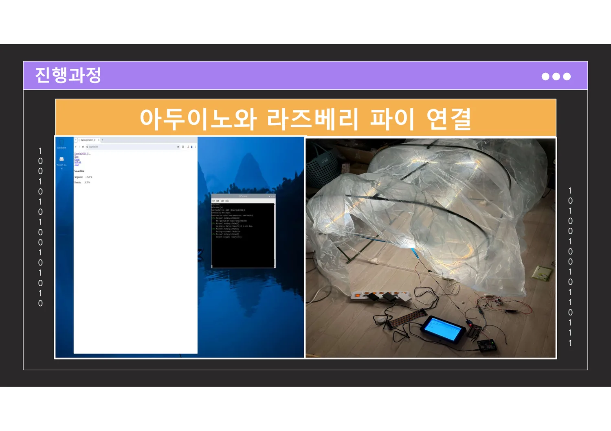
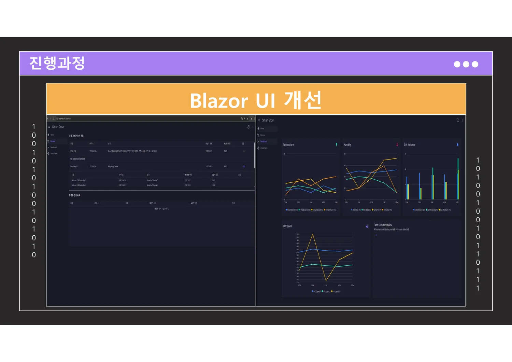
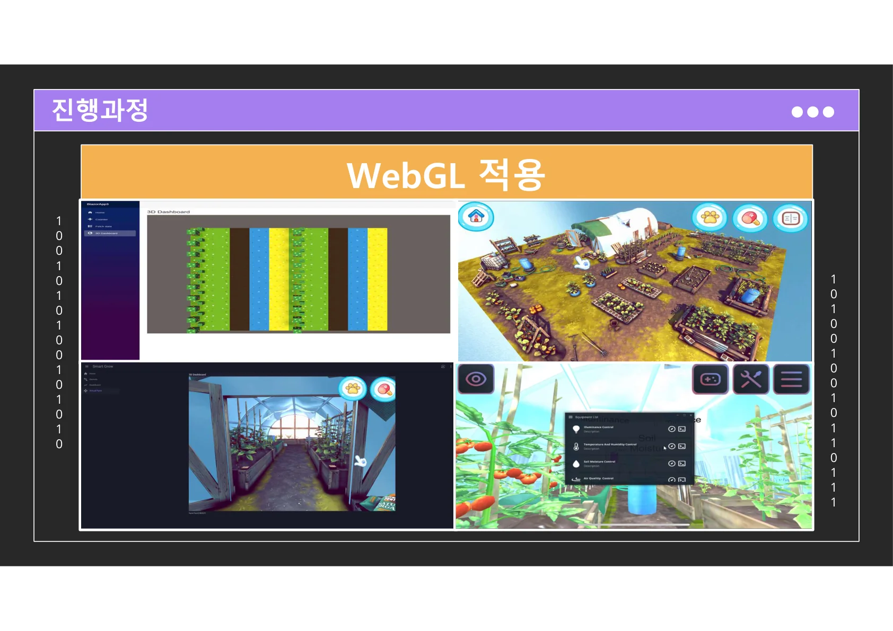

C# · OPC UA · PLC · MQTT · Digital Twin
현장 데이터를 연결해
쓸 수 있는 시스템으로 만듭니다.
반도체 공정 데이터 시각화, OPC UA 서버 개발, PLC 통신 환경 구성, Blazor·MQTT·Unity WebGL 기반 디지털트윈까지 산업 현장과 소프트웨어 사이의 연결 지점을 구현해왔습니다.
About
장비, 데이터, 사용자를 하나의 흐름으로 연결하는 개발자
단순히 화면을 만드는 것보다, 현장의 장비와 데이터가 사용자에게 어떻게 전달되고 제어되는지를 중요하게 봅니다. 공정 데이터 처리, 설비 통신, 웹 기반 시각화, 3D 디지털트윈을 하나의 서비스 경험으로 묶는 데 강점이 있습니다.
공정 데이터 시각화
설비 로그와 수율 데이터를 차트, 대시보드, 분석 화면으로 구성해 사용자가 빠르게 판단할 수 있도록 만듭니다.
산업 통신 연동
OPC UA, PLC, MQTT 기반으로 장비와 서버, 클라이언트 사이의 데이터 흐름을 설계하고 구현합니다.
디지털트윈 UX
실제 장비 상태와 제어 흐름을 직관적으로 이해할 수 있도록 WebGL 기반 3D 경험을 연결합니다.
Skills
직무와 바로 연결되는 기술 스택
이력서와 프로젝트 내용에서 지원 직무에 강하게 어필되는 기술을 중심으로 재배치했습니다.
Industrial & Factory
OPC UAPLCMelsecLS PLCMESData AccessAlarms & Conditions
Application
C#WPFASP.NET CoreBlazor WebAssemblyUnityUnity WebGLJavaScript Interop
Data & Server
MySQLMariaDBMSSQLSQLiteLinux ServerMQTTPython
Work Style
유지보수기술지원트러블슈팅프로젝트 관리문서화협업
Experience
산업용 소프트웨어 중심의 경력 흐름
응용소프트웨어 개발
반도체 공정 데이터 분석 솔루션, 회사 홈페이지, OPC UA 서비스 제품 개발을 수행했습니다.
게임 클라이언트 개발
Unity3D/C# 기반 모바일 야구 게임 개발과 운영 이슈 대응을 담당했습니다.
육군 통신소대장 복무
조직 운영, 일정 관리, 커뮤니케이션 경험을 통해 책임감과 문제 해결 태도를 축적했습니다.
전자공학 전공
학점 3.97/4.5. 임베디드 시스템 및 프로그래밍 기반을 공부하였습니다.
Projects
주요 프로젝트
역할, 기술, 기여가 한눈에 보이도록 카드형으로 정리했습니다.
OPC UA / PLC / C#
OPC UA 서비스 제품 개발
OPC UA 서버 개발자로 참여하여 Data Access 기능 개선, Alarms & Conditions 기능 개발, PLC 통신 환경 구성을 담당했습니다.
- Melsec, LS 등 PLC 통신 환경 구성
- Ladder 기반 테스트 태그값 생성
- 산업 현장 데이터 수집·이벤트 처리 기반 설계
WPF / C# / MySQL
반도체 공정 데이터 분석 프로그램
반도체 공정 데이터를 시각화하고 분석하는 응용 프로그램 개발 및 유지보수를 수행했습니다.
- 데이터 시각화 기능 개발
- 차트 분석 기능 및 대시보드 개선
- 운영 중 발생하는 버그 대응
Blazor / MQTT / Unity WebGL
스마트팜 디지털트윈 통합 솔루션
스마트팜 장비를 하나의 프로그램에서 관리하기 위한 통합 제어 솔루션입니다. 경기 청년 갭이어 프로그램 우수상을 수상했습니다.
- Arduino·Raspberry Pi 기반 센서 데이터 수집
- MQTT 제어 및 웹 차트 시각화
- Unity WebGL 기반 3D 디지털트윈 구현
Unity3D / C#
모바일 야구 게임
모바일 게임 클라이언트 개발자로 콘텐츠 개발 및 운영 이슈 대응을 수행했습니다.
- 랭킹 미션 제작
- 가이드 팝업 제작
- 강화 확률 및 선수 카드 관련 버그 대응
Featured Case Study
스마트팜 통합 솔루션
여러 스마트팜 장비를 하나의 환경에서 관리하기 위해 제작한 디지털트윈 기반 통합 제어 솔루션입니다. 장비별로 분산된 제어 방식을 줄이고, 사용자가 상태 확인과 제어 흐름을 직관적으로 파악할 수 있도록 구성했습니다.
Problem
새 장비가 기존 장비와 독립적으로 개발되어 호환이 어렵고, 장비별 소프트웨어 학습 부담이 커졌습니다.
Solution
장비 제어, 상태 확인, 데이터 수집, 3D 시각화를 하나의 흐름으로 묶어 사용성과 확장성을 높였습니다.
Impact
유지관리 포인트를 줄이고, 표준화된 인터페이스 기반으로 새 장비와 기술을 붙이기 쉬운 구조를 제안했습니다.
Architecture
Arduino에서 Client까지 이어지는 4계층 구조
하드웨어 입력부터 웹 클라이언트 표현까지 역할을 나누어 확장 가능한 흐름으로 구성했습니다.
Build Process
프로토타입 제작부터 WebGL 적용까지
01
하드웨어 제작
센서와 LED, 비닐하우스 구조를 실제 테스트 가능한 형태로 구성했습니다.

02
Arduino ↔ Raspberry Pi
센서 입력과 제어 신호를 상위 장치로 전달하는 흐름을 구성했습니다.
03
Raspberry Pi ↔ Client
클라이언트가 장치 정보를 조회하고 제어할 수 있도록 연결 구조를 확장했습니다.

04
Blazor UI 개선
상태 확인과 제어를 웹 화면에서 직관적으로 볼 수 있도록 UI를 개선했습니다.

05
Unity WebGL 적용
디지털트윈 화면과 Blazor WebAssembly를 연결해 사용자가 공간과 장비 상태를 함께 이해하도록 구성했습니다.
Implementation
구현 포인트
Arduino LEDSensor
LED, 조도센서, MQTT 설정을 라이브러리화해 재사용성과 유지보수성을 높였습니다.
Raspberry Pi DeviceController
동일 망의 장비를 Ping으로 탐색하고, 하위 아두이노 장치 정보를 클라이언트에 전달했습니다.
Main Server Devices
장비와 자식 디바이스를 트리 구조로 보여주고, 토픽 및 장비 정보를 기반으로 연결할 수 있도록 구성했습니다.
Unity WebGL Interop
Unity WebGL의 클릭 이벤트와 Blazor WebAssembly의 C# 메서드를 JavaScript Interop으로 연결했습니다.
Awards & Certificates
수상 및 자격
Contact
현장에 실제로 쓰이는 시스템을 만들고 싶습니다.
공정 데이터 처리, 설비 연동, 시각화, 디지털트윈 프로젝트에 관심이 있습니다.